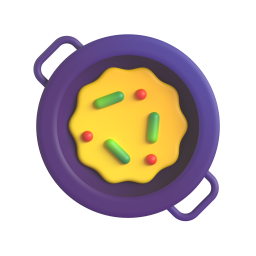

14:32signal_cellular_altwifibattery_5_bar
WezFood
Le carnet d'Elliot142 recettes
Je veux un plat végé ou vegan add
24 recettes trouvées
RécentsA–Z
Ajoutée hier soir
PlatVégé25 min

Shakshuka du dimanche
D
- Dahl corail cocoVegan
- Dolmas maisonVegan
F
- Falafels au fourVegan
- Frittata aux herbesVégé